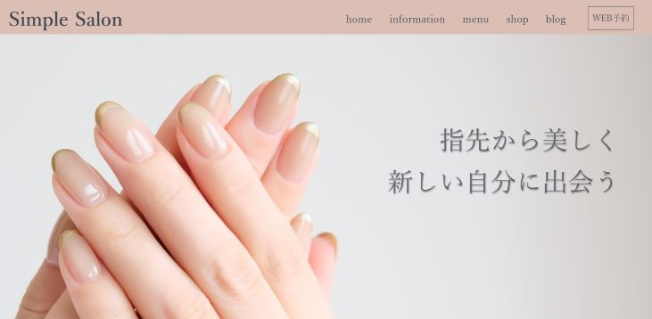
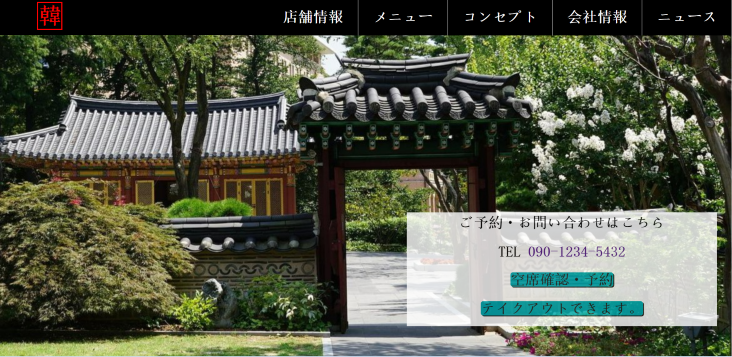

ネイルサロンのホームページは初めて作成した擬似サイトとなっております。 覚えたてのHTMLとCSSを、調べながら作成していきました。 イメージとして、２０代～３０代の方でシンプルなネイルを好む方や、落ち着いた静かな雰囲気が出るように、 色合いも淡い色合いで意識しました。 次に韓国料理店の擬似サイトを作成しました。 強調できるように、マーカー風のラインを引きました。 スマホ対応でのレスポンシブサイトとなっております。